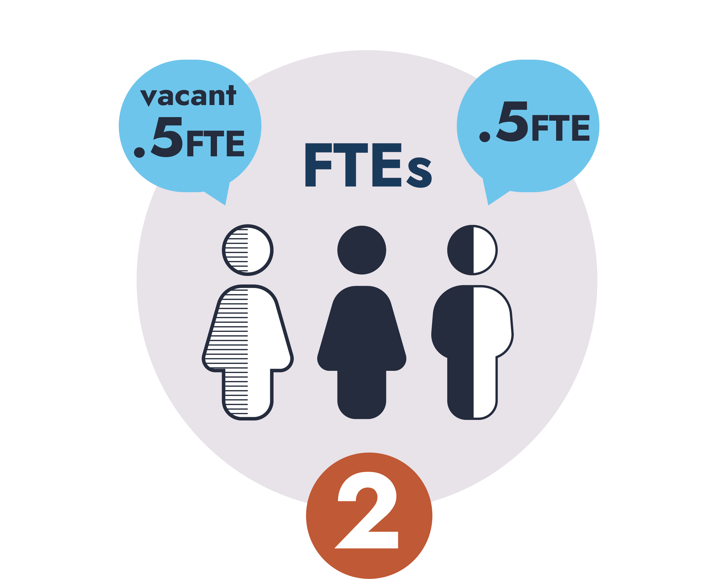
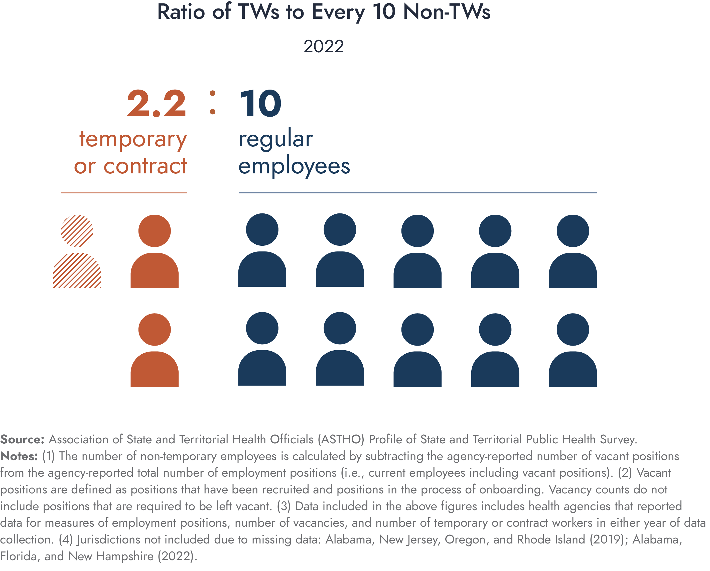
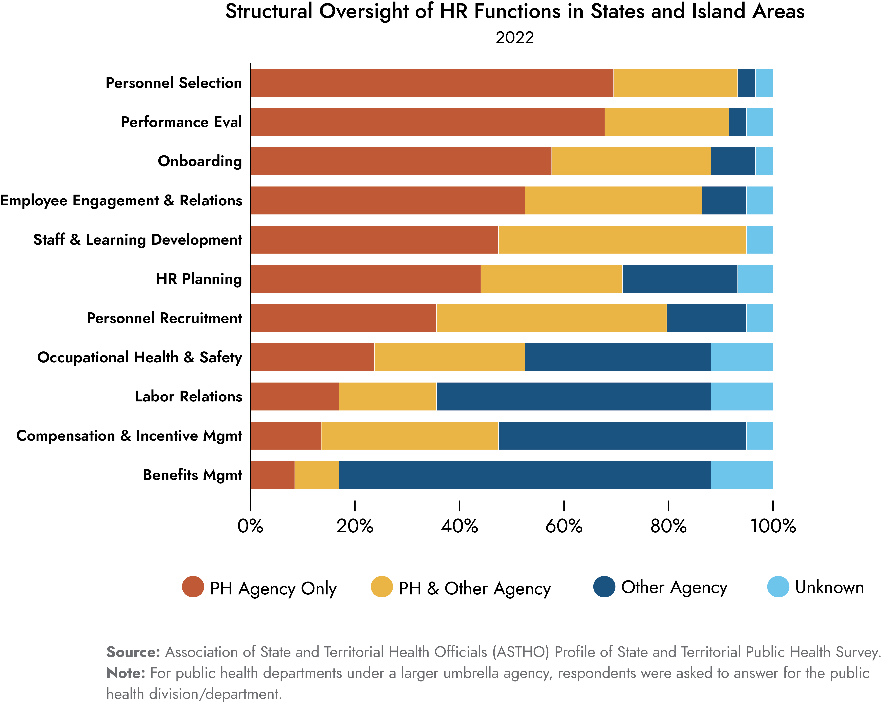

What Should Workforce and HR Directors Know? Lindsay Jorgenson & Miriam Naiman-Sessions April 2024
Background
Background | What is the Profile?
The ASTHO Profile of State and Territorial Public Health is a longitudinal census that began in 2007 and is fielded every three years to state and territorial health agencies with funding from CDC and RWJF.
Background | How is the Profile Used?
Background | How Do We Measure Workforce?


Background | How Do We Measure Workforce?
The number of filled or vacant full-time equivalent positions (different from workers and positions).
FTEs can include filled FTEs and vacant FTEs, which is a way to describe workforce capacity.
Background | How Do We Measure Workforce?
The number of actual positions (filled or vacant) within the agency/department.
One position may equal one FTE, but it may not. Two half-time positions, for example, equals one FTE.
Background | How Do We Measure Workforce?
The number of people working at the agency (also called a head count).
One full-time employee (1FTE) might work in two positions, both at .5FTE.
Profile Findings
Profile Findings | Classification
Governance classification affects workforce size.
In centralized agencies, employees who work at a local or regional health departments are employees of the state health agency. As a result, workforce size is generally greater in centralized agencies.
Profile Findings | Workforce Size
Agencies reported a 1.1% increase in non-temporary employees.
In 2022, there were just over 75,000 state health employees working in 48 states (not all of these worked at a state central office).
Profile Findings | Vacancy
An average of 11.4% of positions are vacant across all agencies.
The rate of vacancies in 2022 is double the 2016 rate. Additional research finds that over a third of state health agency employees separated from their employment between 2017 and 2021.1
Profile Findings | Vacancy
Vacancy increased in 31 agencies from 2019 to 2022.
While we do not know what exactly drove increases in vacancy, it should not be assumed that an increase is “bad.” It could be that new positions were being posted but not yet filled at the time of survey collection.
Profile Findings | Temps
The use of temporary and contract workers grew 38.9% from 2019 to 2022.
In other words, public health agencies are relying on more temporary or contract workers (TWs) within their workforce than they have in the past.
Profile Findings | Temps
In 2022, there were 2.2 TWs to every 10 non-TWs.
The ratio of TWs to non-TWs workers ranged from as low as 1 TWs to every 100 non-TWs all the way to 167 TWs to every 100 NTWs.

Profile Findings | Structure
Only 58% of public health agencies oversee human resources.
Of those that do not oversee human resources, it is typically the umbrella agency for agencies that are structured within an umbrella.
Profile Findings | Structure
Most agencies - 90% - oversee workforce development.
Three of the four agencies that do not oversee workforce development share a centralized governance classification; two are under an umbrella and two are freestanding.
Profile Findings | Structure
There is significant variability in the oversight of HR functions across jurisdictions.
Most oversee functions such as personnel selection and performance evaluation, whereas few have oversight of benefits and compensation/incentives.

Let’s Jump In!
www.astho.org/profile
2025 Profile Fielding
2025 Profile | Goals
- Reduction of survey burden for those S/THA staff reporting on the workforce
- Harmonization with other PH Workforce data collections (PH WINS, NACCHO)
- Collect data that is both needed and used by ASTHO members and PH stakeholders
- Explore the feasibility and benefit of an annual fielding
2025 Profile | Feedback
- What “hot topics” are emerging in your work?
- What information would help you locate and connect with peers?
- What information would support your work?
- What information do you think would be impactful to share with decision-makers?
Profile | References and Notes
- Leider JP, Castrucci BC, Robins M, et al. “The Exodus Of State And Local Public Health Employees: Separations Started Before And Continued Throughout COVID-19.” Health Affairs. 2023;42(3):338-348. www.ncbi.nlm.nih.gov/pubmed/36877909. Accessed 10-4-2023.